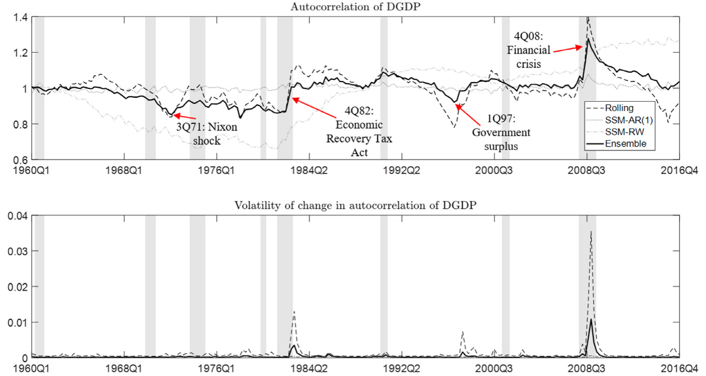
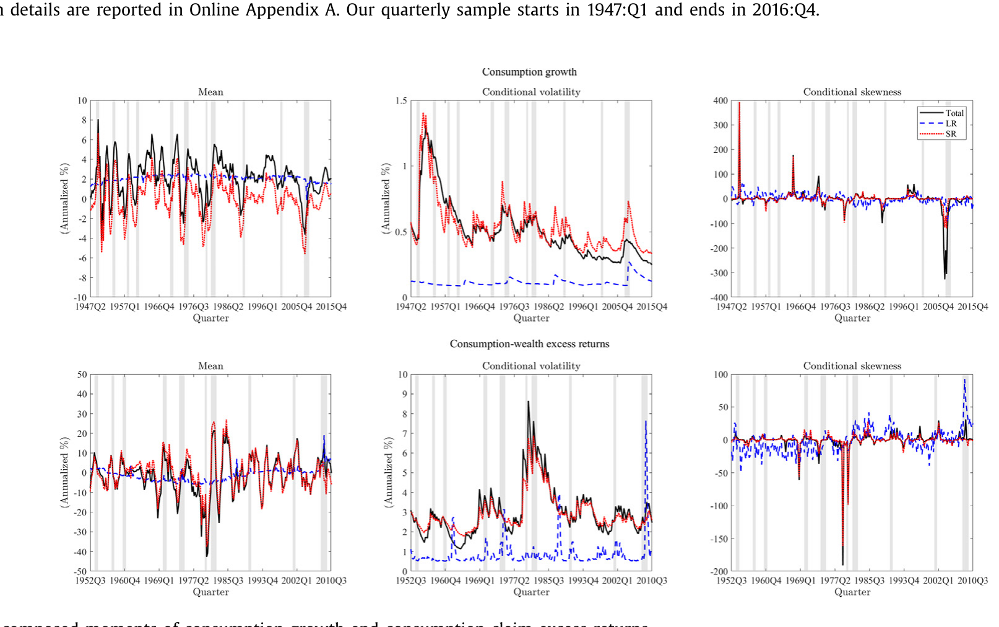
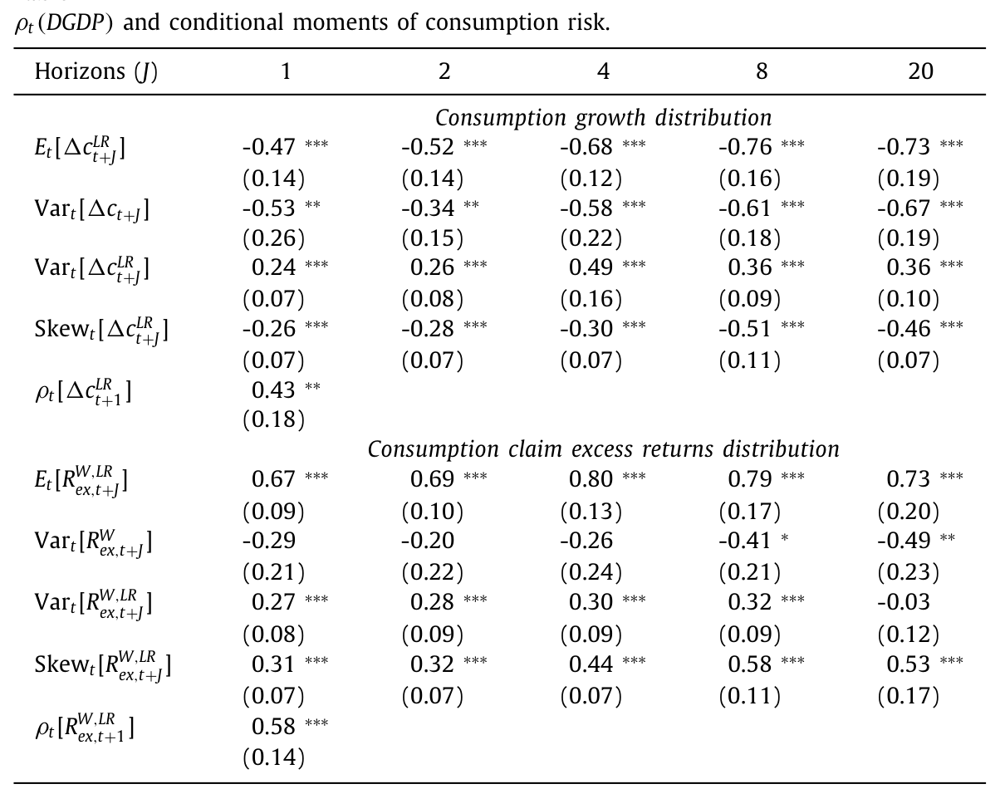
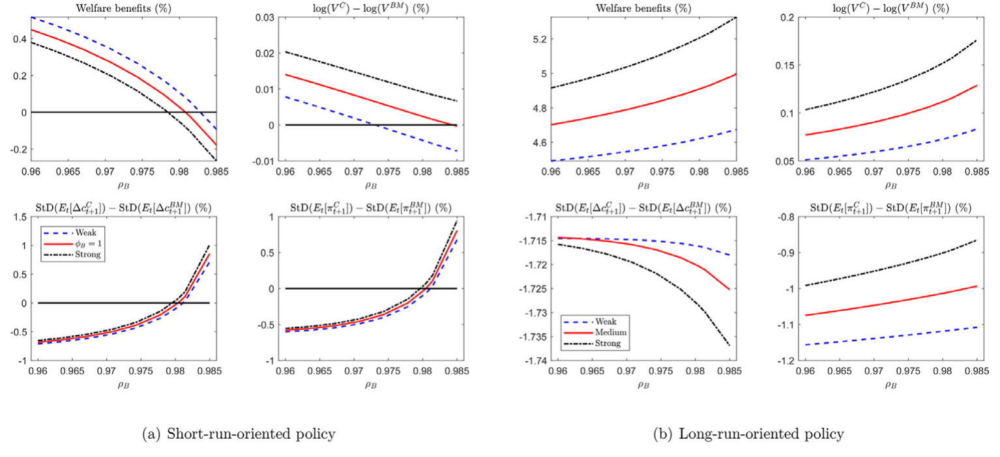
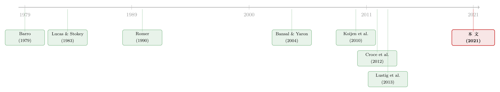

把债务「慢慢还」，到底是在稳增长，还是在囤风险？
本文读的是 Croce, Nguyen & Raymond (2021, Journal of Financial Economics)：当政府债务「黏滞」——即债务-产出比向均值回归的速度变慢——时，消费的长期增长更低、长期不确定性更大、长期下行风险（负偏度）更重，而消费索取权的风险溢价同时上升、并带上更「不利」的正偏度。作者用一个内生增长 + 递归偏好的一般均衡模型把这套事实讲圆，并得出一个反直觉的政策含义：承诺尽快压低债务-产出比，反而能抬高创新的价值、总财富与福利。
1 一个被反复讲述的「故事」，和一个没人算过的账
2008 年秋天的金融危机之后，各国政府以前所未有的规模出手干预，试图阻止一场全球性的大萧条。世界经济重回正增长，似乎说明这些政策在「短期稳定」上是成功的——但它们的长期后果，至今仍是一笔糊涂账。
更耐人寻味的是政治家们的姿态。意大利政府公开宣布要无视此前向欧盟承诺的债务-产出比削减计划，转而扩大政府支出与福利；美国政府则选择忽略国会预算办公室（CBO）关于债务路径不可持续（non-stationarity）的警告。这些政策被包装成「促增长」(pro-growth)，但资本市场闻到的却是风险的味道。
于是一个非常自然、却很少被严肃量化的问题浮出水面：把债务「慢慢还」，到底是在为增长腾挪空间，还是在悄悄地、把风险从今天搬到明天？
本文的答案是后者。而且它告诉你：之所以过去大家会得出「促增长」的乐观结论，是因为只盯着平均税负和短期增长，漏看了风险在不同期限上的分布。一旦把这件事算清楚，结论就会反转。
2 不要问「欠了多少」，要问「还得多快」
本文的第一个聪明之处，是换了一个测量对象。
衡量财政可持续性，传统做法是看债务-产出比（debt-to-output，下文记作 DGDP）的水平。但 Croce 等人关心的不是水平，而是调整速度——政府把债务-产出比拉回均值的快慢。他们用一个带时变系数的自回归来刻画这种「黏滞性」(sluggishness)：
$$DGDP_t = a + \rho_{B,t}\, DGDP_{t-1} + \epsilon_t$$
这里的 \(\rho_{B,t}\) 就是均值回归速度的反面：\(\rho_{B,t}\) 越接近 1，债务越「黏」、回归越慢、半衰期（half-life）越长。关键在于，作者不把 \(\rho_{B,t}\) 当成常数，而是让它自己也服从一个 AR(1) 过程——这是用计量上方便的方式去刻画「政策体制的变化」：
他们用了好几种方法来估这个时变的 \(\rho_{B,t}\)，以验证结果稳健：拟极大似然的状态空间模型（SSM-AR(1)）、把 \(\rho_{\rho,B}\) 设为随机游走的极端情形（SSM-RW(1)），以及在 10 到 50 个季度的多个窗宽上做滚动窗口 AR(1)。最后他们干脆把这些估计「集成」起来，取一个等权平均：
$$\hat\rho_t(DGDP)^{Combo} = \tfrac{1}{2}\,\hat\rho_t(DGDP)^{RollWind} + \tfrac{1}{2}\Big[\tfrac{1}{2}\,\hat\rho_t(DGDP)^{AR} + \tfrac{1}{2}\,\hat\rho_t(DGDP)^{RW}\Big]$$
样本是 1947:Q1–2016:Q4 的美国季度数据。
估出来的 \(\rho_{B,t}\) 有很强的时变性，而且——这是第一个值得记住的事实——它是顺周期的：经济好的时候政府还债快（\(\rho_{B,t}\) 低），衰退的时候还债慢（\(\rho_{B,t}\) 高）。换句话说，债务黏滞性是逆周期的。

Figure 1: Debt-to-output time-varying autocorrelation
这些拐点和历史事件对得严丝合缝：1971 年尼克松冲击之后、克林顿第二任期（IT 繁荣，政府不增支却多收税，事实上更急于削债）期间，债务削减都很快；而 1982 年衰退里的《经济复苏税法》、大衰退里的《刺激法案》出台之后，均值回归速度则急剧下滑。图 1 下半部分还显示：越严重的衰退，伴随的「政府是否会履行还债承诺」的不确定性（那个 GJR-GARCH 波动率）也越大。
3 一个自然的问题：债务变黏，消费会怎样？
接着，一个自然的问题是：当政府对债务-产出比的回归松了手，消费的风险分布会发生什么？
这里本文用了第二个关键手法——把变量分解成长期与短期两块。设 \(y_{t+1\to t+J}\) 为未来 \(J\) 期的累积消费增长（或消费索取权的累积超额收益），它的条件期望被定义为长期（LR）成分，意外冲击则是短期（SR）成分：
$$y^{LR}_{t+1\to t+J} := \mathbb{E}_t\big[y_{t+1\to t+J}\big], \qquad y^{SR}_{t+1\to t+J} := y_{t+1\to t+J} - y^{LR}_{t+1\to t+J}$$
然后分别看它们的水平、条件方差和条件偏度（skewness）。图 2 给出了这套分解后的矩：上排是消费增长，下排是消费索取权（Lustig et al., 2013 的「财富-消费比」对应的那个资产）的超额收益。

Figure 2: Decomposed moments of consumption growth and consumption claim excess returns
图里有两件事一眼可见：消费增长长期成分的波动率是逆周期的——繁荣期平稳，衰退期飙升；而它的偏度在大衰退期间强烈转负，对应真实下行风险（downside risk）的上升。消费超额收益这边，波动率和偏度也都在消费增长承压时向上跳。
把这些矩对 \(\rho_t(DGDP)\) 做回归，就得到了本文的核心实证证据。回归形式是：
$$M(Z)_{t,J} = const^{Z,M}_{J} + \gamma^{M}_{J,Z}\,\rho_t(DGDP) + resid_{t,J}$$
其中 \(M\) 是某个条件矩，\(Z\) 是感兴趣的变量。结果列在表 1 里。

Table 1
4 反转：短期更「稳」，长期更「险」
现在反转出现了。
先看好消息那一面。债务回归变慢时，未来的总消费波动率反而下降：\(Var_t[\Delta c_{t+J}]\) 的载荷在各个期限（\(J=1,2,4,8,20\)）上分别是 -0.53**、-0.34**、-0.58***、-0.61***、-0.67***，全为负。这正是「不那么激进地削债，有助于短期稳定」的证据——和直觉一致。
但坏消息接踵而至，而且更深、更长：
- 长期增长更低。\(\mathbb{E}_t[\Delta c^{LR}_{t+J}]\) 的载荷一路是
-0.47***、-0.52***、-0.68***、-0.76***、-0.73***——债务越黏，预期长期增长越低，且都在 1% 水平显著。 - 长期不确定性更大。长期成分的方差 \(Var_t[\Delta c^{LR}_{t+J}]\) 载荷为正（
0.24***～0.49***），持续性 \(\rho_t[\Delta c^{LR}]\) 的载荷也达0.43**。 - 长期下行风险更重。长期消费增长的偏度 \(Skew_t[\Delta c^{LR}_{t+J}]\) 载荷全为负（
-0.26***～-0.51***）——这一点超出了 Croce et al. (2012) 的原有结论。同样的事实也出现在产出上（见表 2）。
再看资产价格那一面，故事完全自洽：随着债务-产出比的自相关上升，股权（消费索取权）的预期成本上升——\(\mathbb{E}_t[RW^{ex,LR}_{t+J}]\) 载荷为 0.67***～0.80***；与此同时，预期收益的偏度也更正（0.31***～0.58***）。注意，从风险角度看，预期收益的正偏度恰恰标志着资本市场的「distress」：它意味着未来更可能出现需要事前更高补偿的坏状态。
这里有一个极易混淆的细节：消费增长的长期偏度变得更负（下行风险），而预期收益的偏度变得更正——两者方向相反，却讲的是同一件事。坏状态里增长被砸出一条长长的左尾，而要补偿这条左尾，预期收益就被推出一条长长的右尾。
一句话总结这套实证：政府对债务-产出比松手的时期，紧随其后的是更低的预期长期增长、更多的长期风险、更重的长期下行风险。而且这不是美国独有的现象——用英国数据（表 3，消费产出取自世界银行、债务取自国际清算银行）以及 15 个发达国家的更宽截面，结论都被复制。
5 真正关键的一步：为什么这会损害福利？
到这里，怀疑论者会说：短期波动降了、长期波动升了，一加一减，净效应难道不是零？
真正关键的一步在于偏好与增长的内生性。这也是本文相对于「税收平滑」(tax smoothing) 经典处方最实质的推进。
本文研究的是 Croce et al. (2012) 模型的一个更丰富的版本，骨架由三块拼成：
- 技术侧（内生增长）：经济以一个内生且随机的速率增长，增长由企业的创新激励决定（Romer, 1990）。在随机版的 Romer 经济里，增长取决于未来利润的风险调整现值。财政政策通过税收动态改变劳动供给，从而改变创新产品（专利）的市场价值，最终影响长期增长。
- 政府侧：政府用税收与不可状态依存的债务（noncontingent debt）为一条外生的、随机的支出流融资（Barro, 1979），且只有劳动所得税可用（Lucas & Stokey, 1983）。
- 家庭侧（递归偏好）：代表性家庭采用 Epstein-Zin-Weil 的递归偏好（Epstein & Zin, 1989; Weil, 1989, 1990），因而在乎增长风险的跨期分布（Bansal & Yaron, 2004 的长期风险逻辑）。当人偏好不确定性的早期解决时，他们除了平滑消费，还要平滑「延续效用」(continuation utility)。
把这三块拼起来，政府的融资政策就成了一个在不同期限之间重新分配消费风险的装置。于是本文识别出两条相互强化的渠道：
资产价格渠道：增长依赖未来利润的风险调整现值。短期导向的财政政策抬高长期增长风险，专利的市场价值、研发（R&D）投资与增长随之下滑。
跨期扭曲渠道：在递归偏好下，关于未来长期税收扭曲的「消息」会直接影响延续效用——因此整条未来税收扭曲的跨期分布都变得与福利相关，而不只是它对短期消费增长的影响。
对比一下就明白本文的增量在哪：在 Lucas & Stokey (1983) 的经济里，未来税收扭曲的成本可以完全由它对短期消费增长的影响来概括（一个短期消费平滑边际）；而在本文里，你必须同时考虑资产价格边际和跨期扭曲边际。正是这两条渠道的交互，放大了「稳定长期增长」型政策的收益。

Figure 5: Fiscal policies, welfare, risk, and patent value
模型的结论因此变得锋利：通过本文从美国数据里估出的那种短期导向的逆周期税收政策，会显著抬高长期不确定性，压低创新激励与增长——当政府对还债路径缺乏承诺时，负面效应进一步被放大。反过来，以稳定长期增长为目标、并对特定的预期还债速度做出承诺的税收平滑政策，能显著提高增长与福利，哪怕短期消费风险依然很高。作者还考察了一个新配置：在收入中性（revenue-neutral）的前提下引入资本所得税——结果是对创新者和最终生产者同时征税会降低福利，并放大基准模型里的诸多效应。
本文最有政策味道的一句话是：财政当局不该只盯着平均税负和短期增长，而应当关心财政政策的时机与其不确定性。把风险考量引入财政辩论，是这篇文章在更广层面上的诉求。
6 文献脉络
这条研究线，本质上是把两支看似不相干的传统接到了一起。
一支是财政与公共债务的宏观传统：Barro (1979) 奠定了「用税与债为外生支出融资」的框架，Lucas & Stokey (1983) 给出了无资本经济里最优财政货币政策的经典基准。另一支是长期风险与资产定价：Epstein & Zin (1989) 与 Weil (1989, 1990) 的递归偏好，让人开始在乎风险的跨期分布；Bansal & Yaron (2004) 用长期风险给资产定价之谜提供了一个潜在解；Koijen et al. (2010) 与 Lustig et al. (2013) 则把「消费索取权 / 财富-消费比」做成了可度量的对象——本文实证里用的正是他们的数据与思路。
把这两支接起来需要一座桥，这座桥就是内生增长：Romer (1990) 的内生技术进步，让增长依赖于创新的风险调整现值，从而给了财政风险一条作用于长期增长的通道（关于「市场如何给创新定价」，可参见《泡沫里，市场给创新贴错了两次价签》）。

本文的直接前身是作者自己的 Croce et al. (2012)——那篇研究财政政策与 Hansen-Sargent (2010) 意义上的「悲观」之间的关系。相比之下，本文提供了一套关于政府债务与总风险之关系的全新且更广的实证分析，并把模型推进到带有现实财政规则的版本，证明稳定化的收益是期限依赖的、且与增长风险的期限结构紧密相关。它与 Tallarini (2000)、Alvarez & Jermann (2004, 2005) 用资产价格度量经济波动福利成本的工作一脉相承，但明确把政府政策的福利含义、创新的市场价值与消费风险的跨期分布联系了起来（关于「为什么风险溢价是资产定价的中心」，可参见《贴现率：资产定价的中心议题》）。它也呼应了 Barlevy (2004)——后者发现在内生增长的随机模型里，商业周期的成本可以很大；本文的不同在于明确考虑了风险敏感框架下的财政稳定，以及递归偏好带来的跨期风险再分配。
7 评论与延伸（Q&A + 研究方向）
(a) 几个可能的疑问
Q：「债务黏滞」和单纯的「债务水平高」是一回事吗？
不是。本文刻意绕开了水平，转而度量回归速度 \(\rho_{B,t}\)（半衰期/黏滞性）。一个高债务但承诺快速削减的政府，和一个低债务却任其漂移的政府，在本文的框架里是两种截然不同的风险体制。把焦点从「欠多少」移到「还多快、是否有承诺」，是这篇文章的核心识别思想。
Q：短期波动率下降、长期波动率上升，凭什么说净效应是坏的？
因为在递归偏好（Epstein-Zin）下，风险的跨期分布本身进入福利函数——当人偏好不确定性的早期解决时，把风险从近端搬到远端并不是零和。再叠加资产价格渠道：长期增长风险上升会直接压低专利价值与研发，于是「搬运风险」还顺手砸了增长本身。两条渠道相互强化，使净效应明确为负。
Q：\(\rho_{B,t}\) 是估出来的隐含状态，会不会只是计量噪声？
作者用了多种方法交叉验证——状态空间（SSM-AR(1)）、随机游走极端情形（SSM-RW(1)）、多窗宽滚动 AR(1)，再做等权集成（式 3）；并在在线附录 C 用模拟说明该策略能很好地代理真实的时变持续性。更有说服力的是外部效度：英国数据与 15 国面板都复制了同一组事实。
Q：表 1 里消费增长偏度变负、收益偏度变正，是矛盾吗？
不矛盾，恰恰是同一枚硬币的两面。债务变黏时，长期消费增长被压出一条更长的左尾（负偏度 = 下行风险）；而要为承担这条左尾提供事前补偿，预期收益就被推出一条更长的右尾（正偏度，即文中所谓「不利」偏度，因为它标志着需要高补偿的坏状态更可能出现）。
Q：政策含义是不是「永远要快速削债」？
不完全是。本文区分了税收平滑的两种取向：若以长期稳定为目标并对还债速度做出承诺，平滑是福利增进的；若是为短期稳定服务的逆周期政策，则会抬高长期风险、压低增长与福利。关键词是承诺与长期导向，而非一味地快。
Q：这套结论依赖「只有劳动税」吗？
基准模型确实沿用 Lucas-Stokey 的只有劳动税设定，但作者额外考察了收入中性地引入资本所得税的新配置：对创新者和最终生产者征税会降低福利并放大基准里的效应。所以引入资本税不会救场，反而加剧问题——这是相对先前工作的一个新结果。
(b) 几个可能的研究问题与提案
1. 债务黏滞性与公司债信用利差的期限结构
【经济故事】本文说债务变黏会抬高长期增长风险与下行风险。如果长期违约风险被重新定价，那么公司债信用利差的期限结构应当对 \(\rho_{B,t}\) 有可预测的反应——长端利差对债务黏滞性的敏感度应高于短端。 【可行性】中。数据可得（TRACE + Mergent FISD 构造分期限利差，配合本文方法估 \(\rho_{B,t}\)）；识别上需要把财政黏滞与货币政策、信用周期分离开，存在共线性挑战，但可借助跨国面板提供变异。
2. 外资持有人结构与一国债务黏滞性的定价
【经济故事】当大量国债被外国投资者持有时，政府对「还债承诺」的可信度与外资的久期偏好交织。外资比例高的国家，债务黏滞性上升是否更快地传导到本币信用风险与流动性？ 【可行性】中。可用 BIS / IMF 的外资持债数据 + 本文的 15 国面板。识别策略偏弱（难找外生的外资份额变动），更适合做相关性证据或借助指数纳入等准自然实验。
3. 财政承诺冲击对创新（专利/研发）的微观证据
【经济故事】模型的核心机制是「财政风险→专利市场价值→研发」。能否在企业层面直接验证：当 \(\rho_{B,t}\) 跳升（承诺减弱）时，研发密集型企业的估值与 R&D 投资是否下滑更多？ 【可行性】高。Compustat 的 R&D + 专利数据库 + 本文估出的 \(\rho_{B,t}\) 时间序列，做企业层面交互回归（研发密集度 × \(\rho_{B,t}\)）。识别靠横截面异质性，较 doable。
4. 「承诺的不确定性」与公司债流动性
【经济故事】图 1 下半部分用 GJR-GARCH 度量了「政府是否履行还债承诺」的不确定性。这种宏观承诺不确定性是否会外溢到公司债二级市场的流动性（价格冲击、做市能力）？ 【可行性】中。流动性度量已成熟（Amihud、价差类），\(\rho_{B,t}\) 的条件波动率可直接取自本文方法。难点在分离宏观不确定性与系统性风险厌恶的同步波动。
8 我的判断与参考文献
贡献。本文最漂亮的地方，是把一个看似纯财政的问题翻译成了一个风险分布问题：它不问「债务多高」，而问「政府还债的快慢与可信度如何重塑了消费风险在期限上的分布」。把时变均值回归速度 \(\rho_{B,t}\) 作为政策体制的代理，是一个计量上干净、经济上有解释力的设计；而「短期更稳、长期更险」这组在美、英、15 国数据里反复出现的事实，本身就值得记住。模型把递归偏好的跨期分布敏感与内生增长的资产价格渠道接在一起，给「促增长赤字其实在囤长期风险」提供了一个自洽的均衡解释。
对识别的担忧。最大的软肋仍在 \(\rho_{B,t}\) 的内生性：债务回归速度本身是经济状态的函数（顺周期），那么「债务变黏 → 长期风险上升」与「衰退同时驱动两者」之间，纯时间序列回归很难彻底切开。作者用跨国证据和模拟缓解了这一担忧，但这更接近一组高度一致的相关事实，而非一个外生冲击的因果识别。此外，福利数量级高度依赖偏好参数（尤其是对早期解决不确定性的偏好强度），其稳健性值得读者自行打个折扣。
后续想看到的。我最想看到一个外生的财政承诺冲击——比如债务上限谈判、财政规则的引入或废除——被用作 \(\rho_{B,t}\) 的工具，从而把因果链坐实；以及把这套逻辑下沉到企业层面，直接检验「财政风险→专利价值→研发」这条本文模型赖以成立的微观传导。
参考文献
- Barro, R. (1979). On the determination of public debt. Journal of Political Economy 87(5), 940–971.
- Lucas, R., & Stokey, N. (1983). Optimal fiscal and monetary policy in an economy without capital. Journal of Monetary Economics 12(1), 55–93.
- Epstein, L., & Zin, S. E. (1989). Substitution, risk aversion, and the temporal behavior of consumption and asset returns: A theoretical framework. Econometrica 57(4), 937–969.
- Weil, P. (1989). The equity premium puzzle and the risk-free rate puzzle. Journal of Monetary Economics 24(3), 401–422.
- Romer, P. M. (1990). Endogenous technological change. Journal of Political Economy 98(5), S71–S102.
- Bansal, R., & Yaron, A. (2004). Risks for the long run: A potential resolution of asset pricing puzzles. Journal of Finance 59(4), 1481–1509.
- Barlevy, G. (2004). The cost of business cycles under endogenous growth. American Economic Review 94(4), 964–990.
- Tallarini, T. D. (2000). Risk-sensitive real business cycles. Journal of Monetary Economics 45(3), 507–532.
- Alvarez, F., & Jermann, U. (2004). Using asset prices to measure the cost of business cycles. Journal of Political Economy 112(6), 1223–1256.
- Koijen, R. S. J., Lustig, H., Van Nieuwerburgh, S., & Verdelhan, A. (2010). Long run risk, the wealth-consumption ratio, and the temporal pricing of risk. American Economic Review 100(2), 552–556.
- Croce, M., Nguyen, T. T., & Schmid, L. (2012). The market price of fiscal uncertainty. Journal of Monetary Economics 59(5), 401–416.
- Lustig, H., Van Nieuwerburgh, S., & Verdelhan, A. (2013). The wealth-consumption ratio. Review of Asset Pricing Studies 3(1), 38–94.
- Croce, M., Nguyen, T. T., & Raymond, S. (2021). Persistent government debt and aggregate risk distribution. Journal of Financial Economics 140(2), 347–367.